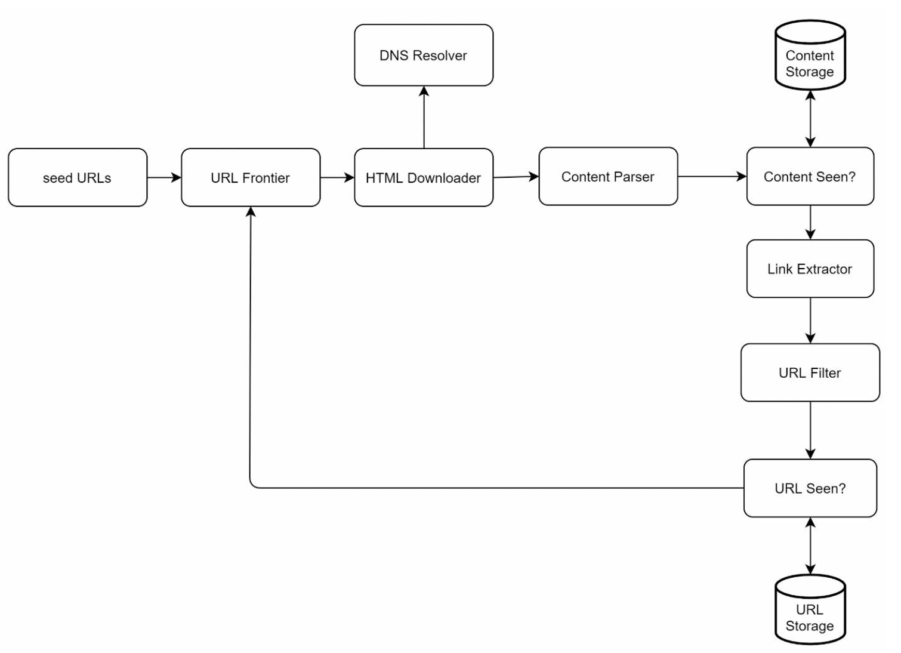

第 9 章：设计一个网络爬虫
原章节：Design a Web Crawler · 原项目路径
09. Web Crawler/
本章导读
搜索引擎怎么知道互联网上有哪些网页？它不会魔法——它靠一个程序，从几个种子链接出发，一个页面一个页面地抓，抓到新链接就继续抓，永不停歇。这个程序就是网络爬虫。
爬虫听起来简单：不就是发 HTTP 请求、解析 HTML、提取链接、循环吗？写一个能爬 100 个页面的脚本，你可能半小时就能搞定。
但把它放大到每月 10 亿个页面，问题就完全不一样了：
- 同一个页面会被无数链接指向，你怎么知道"这个已经爬过了"？在 600 亿条 URL 的记录里查重，要多快？
- 你每秒发几千个请求，会不会把别人的小网站打垮？这在工程上和道德上都是不能接受的。
- 有些网站会故意构造"无限深"的链接陷阱，让你的爬虫永远出不来。怎么防？
- 你爬到别人网站的内容，法律上允许吗？
学完这一章，你应该能回答这些问题，并且理解一个反直觉的结论：爬虫最难的部分不是"下载网页"，而是"决定下一个该下载谁"。
你将学到
- 爬虫的四种典型应用，以及它们对设计的约束差异
- 十一个核心组件的职责与完整数据流
- 为什么图遍历要用 BFS 而不是 DFS
- URL Frontier 的双层队列设计：前队列管优先级、后队列管礼貌性
robots.txt的实际解析规则、Crawl-delay，以及它的法律地位- 布隆过滤器去重的误判率公式与参数选择
- 爬虫的法律与合规边界（原笔记完全没提，但对初学者极其重要）
- 垃圾内容、爬虫陷阱、重复内容的识别与处理
1. 问题背景：爬虫用来做什么
「网络爬虫（Web Crawler）」 也叫蜘蛛（Spider）或机器人（Robot），用来发现和收集网络内容——网页、图片、视频等。
它的核心工作循环只有四步，但这个循环会无限递归下去：
取一个 URL → 下载页面 → 解析内容 → 提取出新 URL → 回到第一步
四种典型应用
| 应用 | 说明 | 例子 | 对爬虫的特殊要求 |
|---|---|---|---|
| 搜索引擎索引 | 抓取网页建立可搜索的索引 | Googlebot、百度蜘蛛 | 追求广度和新鲜度，要覆盖尽可能多的页面 |
| 网页归档 | 保存网页快照供未来查阅 | 美国国会图书馆、Internet Archive | 追求完整性和保真度，宁可慢也不能漏 |
| 网络数据挖掘 | 从网页数据中提取知识 | 财报分析、舆情监控、价格监控 | 追求特定领域的深度，只关心某些网站 |
| 网络监控 | 检测侵权、商标滥用、违规内容 | 版权监测、品牌保护 | 追求时效性，需要高频重爬 |
本章聚焦第一种：为搜索引擎建立索引。 这是规模最大、约束最多的场景，其他三种都可以看作它的简化版本。
设计挑战
| 挑战 | 说明 |
|---|---|
| 可扩展性（Scalability） | 要处理数十亿页面，必须并行化——单机无论如何都做不到 |
| 健壮性（Robustness） | 网络会断、HTML 会畸形、服务器会返回奇怪的东西、页面会包含恶意内容。爬虫不能因为这些崩溃 |
| 礼貌性（Politeness） | 不能把被爬的服务器打垮。 你只是访客，不能因为自己流量大就把人家的服务挤死 |
| 可扩展性（Extensibility） | 今天只爬 HTML，明天要支持 PDF、图片、视频。架构要能低成本地加新类型 |
"礼貌性"这一条值得特别强调。 很多初学者写爬虫时只想着"怎么爬得更快"，这是完全错误的心态。爬虫的第一原则是：你的流量是别人买单的。 你每发一个请求，对方的服务器就要消耗 CPU、内存和带宽。一个不礼貌的爬虫在工程上叫"拒绝服务攻击"，在法律上可能构成不正当竞争甚至犯罪。
2. 第一步：明确需求
| 需求 | 数值 | 推导 |
|---|---|---|
| 每月爬取网页数 | 10 亿 | 需求给定 |
| 平均 QPS | 约 400 页/秒 | 10 亿 ÷ 30 天 ÷ 86,400 秒 ≈ 385.8 |
| 峰值 QPS | 约 800 | 按 2 倍峰值系数估算 |
| 内容类型 | 仅 HTML | 需求限定 |
| 功能需求 | 追踪新增和更新的页面 | — |
| 功能需求 | 忽略重复内容 | — |
| 存储时长 | 5 年 | 需求给定 |
| 存储容量 | 约 30 PB | 需求给定 |
验算一下这 30 PB 是怎么来的。 5 年总共爬取的页面数是：
10 亿/月 × 12 月/年 × 5 年 = 600 亿个页面那么
30 PB ÷ 600 亿 = 500,000 字节/页 = **约 500 KB/页**。也就是说，这个估算隐含的假设是"平均每个页面约 500 KB"。
这个假设偏保守——纯 HTML 文档通常只有 30~100 KB，500 KB 已经接近带图片的完整页面大小了。但考虑到以下几点，这个量级是合理的：
- 5 年内同一个页面会被重爬多次，每次都是一个新版本；
- 存储需要冗余（通常 3 副本，直接 ×3）；
- 还有索引、元数据、压缩前后的差异。
重点不是"500 KB 对不对"，而是要学会这种反推方法：当有人给你一个存储量数字时，反推出它隐含的假设，再判断这个假设在你的场景下是否成立。
3. 第二步：高层设计
3.1 十一个核心组件

| # | 组件 | 职责 |
|---|---|---|
| 1 | 种子 URL（Seed URLs） | 爬取的起点 |
| 2 | URL 前沿（URL Frontier） | 存放待下载的 URL 队列 |
| 3 | HTML 下载器（HTML Downloader） | 从 URL 前沿取 URL，下载网页 |
| 4 | DNS 解析器（DNS Resolver） | 把域名转换成 IP 地址 |
| 5 | 内容解析器（Content Parser） | 校验并解析网页，丢弃畸形页面 |
| 6 | 内容查重（Content Seen?） | 通过哈希比对判断内容是否已爬过 |
| 7 | 内容存储（Content Storage） | 把 HTML 存到磁盘（热门内容放内存以降低延迟） |
| 8 | URL 提取器（URL Extractor） | 从解析后的页面中提取新链接 |
| 9 | URL 过滤器（URL Filter） | 排除黑名单或错误的 URL |
| 10 | URL 查重（URL Seen?） | 记录已访问的 URL，避免重复爬取 |
| 11 | URL 存储（URL Storage） | 存储已访问的 URL |
关于种子 URL
种子 URL 是爬虫的初始输入，选得好不好直接决定了覆盖范围。
- 要有代表性：好的种子能让你通过链接关系"滚雪球"式地扩展到尽可能多的页面。如果种子全选的是孤立的小网站，可能爬了半天也出不了那个圈子。
- 可以按地域划分：不同国家/地区的热门网站作为各自的种子。
- 可以按主题划分：体育、医疗、科技等垂直领域的站点作为各自的种子。主题化种子在垂直搜索场景下非常重要——如果你只做医疗搜索，种子里全是娱乐网站就毫无意义。
种子 URL 是爬虫系统里最容易被忽视、却最难做好的部分。 它本质上是一个冷启动问题：你希望从最少的种子出发，覆盖最大的图。工业界的做法通常是结合多种来源：人工精选的高权重站点 + 站点地图（
sitemap.xml）+ 已有的历史链接数据 + 外链分析结果。
关于 URL 前沿
原笔记在高层设计里说"URL Frontier 实现为一个 FIFO 队列"——这是一个极大的简化。真正的 URL Frontier 是一个复杂的多队列系统，包含优先级调度和礼貌性控制。第 4.2 节会详细展开。
3.2 工作流
- 把种子 URL 加入 URL 前沿。
- HTML 下载器从 URL 前沿取出 URL，通过 DNS 解析器把域名解析成 IP，然后下载页面。
- 内容解析器校验并解析页面，把内容交给「内容查重」组件。
- 如果是新内容，交给 URL 提取器提取出页面里的所有链接。
- 新链接经过 URL 过滤器（排除黑名单/非法 URL）和 URL 查重（排除已访问过的），把唯一的新链接加回 URL 前沿。
- 循环回到第 2 步，永不停止。
注意这个循环没有终止条件。 爬虫是一个长期运行的后台服务，不是一次性任务。它会在爬完一轮后重新开始，去检查页面有没有更新（这叫「重爬 Freshness」）。所以设计时不能假设"跑完就结束"，必须考虑内存泄漏、状态持久化、断点续爬这些长期运行才暴露的问题。
4. 第三步：深挖关键组件
4.1 图遍历：为什么是 BFS 而不是 DFS
万维网可以看作一张有向图：网页是节点，超链接是边。
那么问题来了：遍历这张图，该用深度优先（DFS）还是广度优先（BFS）？
答案是 BFS（广度优先搜索）。
为什么不用 DFS？ 因为网页图的深度可能非常深。
想象一下：一个论坛，每个帖子都有"下一页"，每个用户的个人主页都链接到他的所有帖子，每个帖子又链接到所有评论者……顺着一条链走下去，你可能钻进一个几百万层的递归里，爬了很久却只覆盖了极少数几个网站。
BFS 的优势在于它按层推进：先爬完所有种子页面的直接链接，再爬这些链接的链接。这样能保证覆盖广度——这是搜索引擎最看重的。而且 BFS 天然适合并行化（同一层的页面可以分给多台机器同时爬）。
但标准 BFS 有一个致命缺陷：它完全不考虑页面的重要性。
在 BFS 眼里，一个垃圾站的首页和一个权威新闻网站的首页地位完全相同。这显然不对——不是每个页面都有同等质量和重要性。爬虫应该优先爬重要的页面，因为：
- 重要页面更新更频繁，需要更及时地重爬；
- 重要页面的链接质量更高，顺着它爬能发现更多有价值的页面；
- 你的抓取配额有限，把配额花在垃圾页面上是浪费。
所以真实的爬虫需要"带优先级的 BFS"。 这就引出了 URL Frontier 的设计。
4.2 URL Frontier：优先级与礼貌性的双层队列
这是本章最重要、也最难理解的部分。 URL Frontier 需要同时满足两个看起来互相矛盾的需求：
- 优先级（Priority）：重要的页面要先爬。
- 礼貌性（Politeness）：同一个网站的请求不能并发，必须有间隔。
如果只有优先级，你会把所有高优先级 URL 排在一起，如果它们恰好都来自同一个网站，就会在瞬间对该网站发起大量请求——这就是不礼貌。
如果只有礼貌性，你会严格串行地爬每个网站，但完全不管页面重不重要。
解法是把这两个职责拆到两层队列上：前队列管优先级，后队列管礼貌性。
前队列（Front Queues）：负责优先级

| 组件 | 职责 |
|---|---|
| 优先级器（Prioritizer） | 接收 URL，计算它的优先级 |
| 前队列 f1 ~ fn | 每个队列对应一个优先级档位。高优先级的队列被选中的概率更大 |
| 队列选择器（Queue Selector） | 以带偏置的随机方式选择前队列——高优先级队列被选中的概率更高 |
优先级怎么算？ 常见依据：
- PageRank：来自高权重页面的链接，优先级更高。
- 更新频率：经常更新的页面（新闻首页）优先级更高。
- 站点权重：权威站点优先级更高。
- 业务规则：人工指定某些站点必须优先爬。
为什么用"带偏置的随机"而不是"严格按优先级排序"？
这是一个非常精妙的设计。如果用严格优先级（永远先爬最高优先级队列），会带来两个问题：
- 低优先级队列会被饿死（Starvation）：只要高优先级队列一直有新 URL，低优先级队列永远轮不到。
- 同一时刻只会有一个队列在被消费，并行度下降。
带偏置的随机解决了这两个问题：高优先级队列被选中的概率大（比如 60%），但低优先级队列也有机会（比如每档递减）。这样既保证了重要页面优先，又避免了饿死，还能让多个队列同时被不同线程消费。
后队列（Back Queues）：负责礼貌性

| 组件 | 职责 |
|---|---|
| 队列路由器（Queue Router） | 保证每个后队列 b1 ~ bn 只包含同一个主机（host）的 URL |
| 映射表（Mapping Table） | 记录"主机名 → 后队列"的映射关系 |
| 后队列 b1 ~ bn | 每个队列只装一个主机的 URL |
| 工作线程（Worker Thread）1 ~ N | 每个工作线程绑定一个后队列，串行地从中取 URL 下载 |
核心机制：一个后队列只有一个工作线程。
这意味着同一个主机的请求天然是串行的——不可能有两个线程同时向 example.com 发请求。这就是礼貌性的实现方式。
再加上一个延迟：两次下载之间可以插入一个固定的间隔（比如 1 秒），进一步降低对目标服务器的压力。
两层队列的完整映射关系
把两层串起来，一个 URL 的旅程是这样的：
URL 进入
↓
【优先级器】计算优先级
↓
【前队列 f1~fn】按优先级入队（f1 最高，fn 最低）
↓
【队列选择器】带偏置地随机选一个前队列
↓
【队列路由器】查映射表，按 URL 的 host 决定去哪个后队列
↓
【后队列 b1~bn】每个队列只含一个 host 的 URL
↓
【工作线程】一对一绑定后队列，串行下载，中间插入延迟
↓
下载
为什么这个设计能同时满足两个需求？
- 优先级由前队列保证：高优先级 URL 被更频繁地选中。
- 礼貌性由后队列保证：同一个 host 的 URL 全在同一个队列里，而这个队列只有一个线程在消费，天然串行。
两层解耦，各司其职——这是本章最值得记住的架构思想。
原笔记在这里有一处表述含糊的地方：它把 "Queue Selector" 同时用在了两个地方——礼貌性一节说它是"把工作线程映射到后队列"，优先级一节说它是"随机选前队列"。同一个名字指两个不同阶段的组件，读者会以为只有一个选择器。 详见文末【勘误与补充】。
新鲜度（Freshness）
网页不是静态的。新闻首页每小时都在变，而一份技术白皮书可能几年都不动。重爬的频率应该和更新频率匹配。
- 基于更新历史：如果一个页面过去 10 次检查有 9 次都变了，就应该提高它的重爬频率。
- 基于重要性：重要页面（首页、热门文章）重爬更频繁。
- 基于站点类型：新闻站 > 博客 > 企业官网 > 归档页面。
一个工程上的细节：HTTP 响应头里的
Last-Modified和ETag可以用来判断页面有没有变化，避免重复下载完整内容。如果服务器支持，用条件请求（Conditional GET）：发送If-Modified-Since头，如果内容没变，服务器返回304 Not Modified（没有响应体）。这能极大节省带宽和存储。
4.3 HTML 下载器：robots.txt 与性能优化
robots.txt 的实际解析规则
「robots.txt」 是网站放在根目录下的一个文本文件，用来告诉爬虫"哪些能爬、哪些不能爬"。
位置是固定的：https://example.com/robots.txt。爬虫在爬一个站点之前，必须先获取并解析它。
基本语法：
# 这是注释
User-agent: *
Disallow: /admin/
Disallow: /private/
Allow: /private/public/
Crawl-delay: 1
Sitemap: https://example.com/sitemap.xml
User-agent: BadBot
Disallow: /
指令说明：
| 指令 | 含义 |
|---|---|
User-agent |
指定这条规则适用于哪个爬虫。* 表示所有爬虫；也可以写具体的名字（如 Googlebot）。必须放在一组规则的开头 |
Disallow |
禁止访问的路径前缀 |
Allow |
允许访问的路径。用来在 Disallow 的范围内开一个例外 |
Crawl-delay |
两次请求之间的最小间隔秒数 |
Sitemap |
站点地图的地址，告诉爬虫去哪里找所有页面 |
解析规则（这部分初学者最容易搞错）：
① 最长匹配优先（Longest Match Wins）
如果一个 URL 同时匹配多条规则，以路径最长的规则为准。
Disallow: /private/
Allow: /private/public/
/private/secret.html→ 匹配Disallow（长度 9），禁止。/private/public/index.html→ 同时匹配两条，但Allow的路径更长（16 > 9），允许。
注意：Allow 和 Disallow 的长度一样时，Allow 优先（这是 Google 和 RFC 9309 的规则）。
② 通配符
*匹配任意字符序列：Disallow: /*.pdf$禁止所有 PDF。$表示路径结束：Disallow: /*.php$只禁止以.php结尾的路径。- 注意：
*和$是 Google 等主流爬虫支持的扩展语法，不是原始规范的一部分，但已被广泛接受。
③ 空值语义（很容易搞错）
| 写法 | 含义 |
|---|---|
Disallow: （空值） |
允许爬取所有内容（不是禁止！） |
Disallow: / |
禁止爬取所有内容 |
没有 robots.txt 文件 |
视为允许爬取所有内容 |
robots.txt 返回 5xx 错误 |
保守做法是完全不爬（无法确认规则时，选择不爬最安全） |
robots.txt 返回 404 |
视为没有该文件，允许爬取 |
Disallow:空值等于"全部允许"，这一点几乎所有人都踩过坑。 很多人以为写了个空的Disallow就是禁止，结果恰恰相反。写"禁止全部"必须用Disallow: /。
④ 按爬虫名分组
不同爬虫可以有不同的规则。爬虫在解析时，会优先匹配与自己 User-agent 完全一致的分组；如果没有，才用 * 分组。 一旦匹配到具体分组，就只用那个分组，不再看 *。
Crawl-delay
Crawl-delay: 10 表示"两次请求之间至少间隔 10 秒"。
但要清楚它的局限：
- 它不是官方标准。它来自 1994 年 robots.txt 的早期草案，Google 官方并不支持（Google 建议用 Search Console 的抓取速率设置）。
- Bing、Yandex 等部分支持。
- 即使网站没写
Crawl-delay，爬虫也应该自己控制速率——不能因为"规则没写"就狂发请求。
更现代的做法：如果服务器返回
429 Too Many Requests，一定要看响应头里的Retry-After，按它指定的时间等待。这是 HTTP 标准里明确的"请求太多"信号，比Crawl-delay更权威。
robots.txt 的法律地位：它不是技术强制，只是一个约定。但它于 2022 年被正式标准化为 RFC 9309（Robots Exclusion Protocol），在多个司法辖区的判例中被作为"网站表达了访问意愿"的证据。违反它可能构成"未经授权访问"或"违反诚实信用原则"。 完整的法律与合规边界见文末【勘误与补充 · 补充 1】。
性能优化
| 优化 | 说明 |
|---|---|
| 分布式爬取 | 用多台服务器并行爬取。可以按 host 哈希分配（同一站点固定由一台机器爬，方便做礼貌性控制） |
| DNS 缓存 | DNS 解析是同步阻塞的，一次可能耗时几十毫秒到几百毫秒，会成为吞吐量瓶颈。维护一个 DNS 缓存能显著提速。更好的做法是自己维护 DNS 解析服务，避免依赖系统解析器 |
| 地理分布 | 把爬虫服务器部署在离目标网站近的地方。跨太平洋的往返延迟可能是 200ms，同区域可能只要 5ms |
| 短超时 | 对慢响应或无响应的服务器设置较短的超时时间（比如 5~10 秒）。否则一个卡住的连接会占用一个宝贵的下载线程。不要让一个慢站点拖垮整个爬虫 |
DNS 缓存为什么这么重要？ 因为每个 URL 都要做一次 DNS 解析，而 DNS 查询的延迟远高于你想象（首次查询可能 100ms 以上）。假设你每秒要爬 400 个页面，如果每个都要 100ms 的 DNS 解析，光 DNS 就需要 40 个并发的解析线程。加上缓存后，热门域名的解析结果直接命中，开销接近零。
4.4 健壮性（Robustness）
爬虫面对的是整个互联网——一个充满恶意、错误和意外的环境。
| 手段 | 说明 |
|---|---|
| 一致性哈希（Consistent Hashing） | 在多台爬虫服务器之间分配负载。关键好处是：同一批 host 固定落在同一台机器上，这样礼貌性控制（每 host 串行）才能跨机器生效 |
| 错误处理（Error Handling） | 任何异常都不能让系统崩溃。网络错误、超时、畸形 HTML、编码问题、超大响应体……全部要捕获并优雅降级 |
| 数据校验（Data Validation） | 校验内容的完整性。比如响应体的 Content-Length 和实际读到的不一致，说明传输被截断了 |
必须防御的具体场景：
- 畸形 HTML：现实中大量网页的 HTML 是"脏"的（标签不闭合、嵌套错误、编码声明错误）。解析器必须容错，不能因为一个标签就抛异常。
- 超大响应体：有些服务器会返回一个无限大的流（比如一个永不结束的直播流）。必须设置最大响应体大小，超过就断开。
- 恶意内容：压缩炸弹（一个几 KB 的 gzip 解压后几个 GB）、路径穿越、注入攻击。
- 重定向循环：A → B → A 无限循环。必须限制重定向次数（通常 5~10 次）。
4.5 可扩展性（Extensibility）
爬虫今天只爬 HTML，明天可能要爬 PDF、图片、视频。架构要能低成本地加新类型。

做法：把"内容处理"抽象成可插拔的模块（Plugin）。核心的下载、去重、存储逻辑不变，新增内容类型只需要加一个模块：
- PNG 下载器模块：识别并下载图片。
- 网页监控模块：监测内容变化，用于版权或商标侵权检测。
- PDF 解析模块：提取 PDF 文本。
这种设计的关键是"识别 + 分发"：主流程只负责识别内容类型（看 Content-Type 头或文件扩展名），然后把内容分发给对应的处理模块。主流程完全不需要知道有哪些模块存在。
4.6 避免问题内容
① 重复内容（Duplicate Content）
原笔记说"通过哈希比对检测重复内容"。这个说法只覆盖了最简单的情况。
- 精确重复（Exact Duplicate）：两个页面字节完全相同。用 MD5 / SHA-1 哈希比对即可，原笔记说的方法适用于此。
- 近似重复（Near Duplicate）：这是更常见也更麻烦的情况。同一个页面，可能只是广告位不同、时间戳不同、或者 URL 里带了个 session ID。哈希完全不同，但内容实质上是重复的。
近似重复的检测方法：
| 算法 | 原理 | 特点 |
|---|---|---|
| SimHash | 把文档映射成一个 64 位指纹，相似文档的指纹只有少数几位不同 | Google 采用，适合大规模网页去重 |
| MinHash | 用多个哈希函数对文档的 shingle 集合做最小哈希，估计 Jaccard 相似度 | 数学上有理论保证，适合集合相似度 |
| Shingling | 把文档切成连续的 n 个词的片段，比较片段集合的重合度 | 直观易懂，常与 MinHash 配合 |
SimHash 的直觉：普通的哈希函数有个"雪崩效应"——输入变一个字符，输出就完全不同。SimHash 恰恰相反：内容相似的文档，输出的指纹也相似（汉明距离小）。所以判断两个页面是否近似重复，只需要算两个 64 位指纹的汉明距离，小于阈值（比如 3）就认为是重复的。这个计算是位运算级别的，快到可以忽略开销。
② 爬虫陷阱（Spider Traps）
爬虫陷阱是故意设计来让爬虫陷入无限循环的页面结构。常见类型：
| 陷阱 | 例子 |
|---|---|
| 无限日历 | 一个日历页面，每个日期都链接到"前一天"和"后一天"，可以无限往前/往后翻 |
| 无限目录 | 动态生成的目录列表，永远有"下一页" |
| URL 参数爆炸 | /page?id=1&ref=2&session=abc，参数组合无限多，但内容都一样 |
| Session ID 污染 | 每个请求都分配一个新 session ID 并写进 URL，导致同一个页面产生无数个 URL |
| 软 404 | 不存在的页面返回 200 状态码和一个空页面，让爬虫以为这是有效内容 |
防御手段：
- URL 长度上限：超过一定长度（比如 2000 字符）的 URL 直接丢弃。
- 最大爬取深度：从种子 URL 算起，超过 N 层（比如 20 层）就不再深入。
- 单站点页面配额：每个 host 最多爬 N 个页面（比如 10 万），防止单个站点吃掉全部配额。
- URL 规范化（Normalization）：去掉 session ID、排序查询参数、统一大小写、去掉多余的
/和#fragment。这是最重要的一条——大部分陷阱都是靠"同一个页面产生多个 URL"来工作的。 - 内容指纹去重：即使 URL 不同，如果内容指纹相同，也判定为已爬过。
- 人工维护黑名单：对已知的陷阱站点直接排除。
URL 规范化是爬虫的必修课。 下面这些 URL 在语义上完全等价，但字符串完全不同：
http://example.com/page http://example.com/page/ http://example.com/page?utm_source=twitter http://example.com:80/page https://EXAMPLE.com/page http://example.com/page#section2不做规范化，你的去重系统会被大量重复 URL 淹没，爬取效率断崖式下跌。
③ 数据噪声（Data Noise）
网页里充满了与内容无关的东西：广告、导航栏、页脚、评论、推荐位、弹窗。
过滤手段：
- 基于 DOM 结构：识别并移除常见的广告容器（如
<div class="ad">）、导航栏、页脚。 - 基于文本密度：正文区域的文本密度高，导航和广告区域密度低。
- 基于机器学习：训练模型识别正文区域（工业界主流做法）。
- 基于规则：对已知的广告域名、iframe 来源做黑名单。
噪声过滤的质量直接决定了搜索引擎的质量。 如果一个页面的广告文字被当成正文索引，用户搜"买手机"就会搜出满屏的广告。这也是为什么搜索引擎的正文提取是一个专门的研究方向。
5. 第四步：收尾
核心结论
- 爬虫必须在四个维度之间取得平衡：可扩展性、健壮性、礼貌性、可扩展性（Extensibility）。这四个目标经常互相冲突——比如追求速度就会伤害礼貌性。
- 礼貌性防止压垮目标服务器，优先级保证重要页面先被爬取。 这两者通过双层队列（前队列管优先级、后队列管礼貌性）实现。
- 高效的存储和错误处理是大规模爬取的基石。 30 PB 的数据和每天都会遇到的畸形网页，都不是可以"以后再说"的问题。
其他考量
| 考量 | 说明 |
|---|---|
| 服务端渲染（Server-Side Rendering） | 现代网页大量依赖 JavaScript 和 AJAX 动态生成内容。纯 HTTP 下载器拿到的可能是一个空壳 HTML。需要引入无头浏览器（Headless Chrome）来执行 JS，但代价是资源消耗大几十倍 |
| 反垃圾措施（Anti-Spam） | 排除低质量和无关页面。垃圾站点会做 SEO 作弊（关键词堆砌、隐藏文本、链接农场），需要识别并降权 |
| 数据库分片（Sharding） | 用复制和分片扩展数据层。600 亿条 URL 记录和 30 PB 内容必须分片 |
| 水平扩展（Horizontal Scaling） | 用无状态服务器来高效扩展爬取任务。爬虫的下载器本身无状态（状态都在 URL Frontier 和存储里），所以可以随意增删 |
| 分析（Analytics） | 收集和分析爬取数据，用于优化优先级和新鲜度策略 |
勘误与补充
本节逐条指出原笔记中不准确、过时或缺失的地方。
勘误 1：URL Frontier 不是"一个 FIFO 队列"
- 原文说法：在高层设计的组件列表里，原笔记写道
URL Frontier: Stores URLs to be downloaded. Implemented as a FIFO queue（URL 前沿存放待下载的 URL，实现为一个 FIFO 队列）。 - 问题：这是极大的简化，会误导读者。如果 URL Frontier 真是一个简单的 FIFO 队列，那么：① 它无法实现优先级（重要页面和垃圾页面同等对待）；② 它无法实现礼貌性（会并发地向同一个站点发请求，把对方打垮）。而这两点恰恰是原笔记自己在 Step 3 里重点讨论的内容——前后自相矛盾。
- 正确说法：URL Frontier 是一个多层队列系统，至少包含两层：前队列（Front Queues）按优先级组织，后队列（Back Queues）按主机名组织。高层设计里的"FIFO 队列"只是对外的抽象接口，不是内部实现。
- 延伸：建议读者把"URL Frontier"理解成一个**调度器（Scheduler）**而不是一个队列。它的职责是"决定下一个该下载谁"，这是整个爬虫系统里最核心、最复杂的部分。
勘误 2："Queue Selector" 一词被用于两个不同阶段，造成混淆
- 原文说法：原笔记在礼貌性一节写道 "Queue selector: Each worker thread is mapped to a FIFO queue"，在优先级一节又写道 "Queue selector: Randomly choose a queue with a bias towards queues with higher priority"。
- 问题：同一个术语 "Queue selector" 被用来描述两个完全不同阶段的组件——一个是"工作线程与后队列的绑定关系"，另一个是"从前队列中挑选队列"。读者会以为只有一个选择器，从而理不清两层队列的映射关系。
- 正确说法：应该区分成两个独立角色：
- 队列选择器（Queue Selector）：在前队列阶段工作，以带偏置的随机方式从
f1 ~ fn中选一个队列。 - 队列路由器（Queue Router）：在前队列到后队列的转换阶段工作，查映射表决定 URL 去哪个后队列；而"工作线程绑定后队列"是这个设计的结果，不是一个选择动作。
- 队列选择器（Queue Selector）：在前队列阶段工作，以带偏置的随机方式从
- 延伸：完整的映射链是：
URL → 优先级器 → 前队列（优先级）→ 队列选择器 → 队列路由器（查映射表）→ 后队列（主机名）→ 工作线程（一对一）→ 下载。详见第 4.2 节。
勘误 3："哈希比对检测重复内容"只覆盖了精确重复
- 原文说法：
Content Seen?: Checks for duplicate content using hash comparisons (compare the hash values of the two web pages)（内容查重：通过比较两个网页的哈希值来检测重复内容）。 - 问题：哈希比对只能检测字节级完全一致的重复。但互联网上的重复内容绝大多数是"近似重复"——同一个页面，可能只是广告位不同、时间戳不同、或 URL 里带了个 session ID。这些页面的哈希值完全不同，但内容实质重复。只用哈希比对，会漏掉绝大部分重复。
- 正确说法：需要引入近似重复检测算法，工业界主流是 SimHash（Google 采用）或 MinHash + Shingling。它们的核心思想是：相似文档的指纹也相似，通过计算指纹的汉明距离或集合相似度来判断重复。
- 延伸：URL 规范化（Normalization） 是比内容去重更前置、更廉价的手段。去掉 session ID、统一大小写、排序查询参数、去掉 fragment，能直接消灭大量"同一个页面产生多个 URL"的问题。
勘误 4：Crawl-delay 被当作标准指令
- 原文说法：原笔记在 robots.txt 相关处只提了"遵守 robots.txt 的规则"，并在礼貌性一节提到"在两个下载任务之间加一个延迟"，但没有说明
Crawl-delay的实际地位。 - 问题：
Crawl-delay不是 robots.txt 的官方标准指令。它来自 1994 年的早期草案，Google 官方不支持（Google 建议使用 Search Console 的抓取速率设置），只有 Bing、Yandex 等部分引擎支持。 - 正确说法：即使
robots.txt里没有Crawl-delay，爬虫也必须自己控制速率——这是爬虫的基本伦理，不能因为"规则没写"就狂发请求。更权威的信号是 HTTP 的429 Too Many Requests状态码和Retry-After响应头。 - 延伸：robots.txt 已于 2022 年被正式标准化为 RFC 9309（Robots Exclusion Protocol），这是它从"事实标准"变成"正式标准"的里程碑。
勘误 5：爬虫的数值验算（诚实说明）
- 原文说法：原笔记给出"每月 10 亿页面 → 400 页/秒，峰值 800 QPS"和"存储 5 年约需 30 PB"。
- 核验结果：
10 亿 ÷ 30 天 ÷ 86,400 秒 = 385.8 页/秒，四舍五入为 400，正确。峰值 800（2 倍系数）也是合理的工程估算。- 30 PB 反推：
30 PB ÷ (10 亿 × 12 × 5) = 30 PB ÷ 600 亿页 = 500 KB/页。这个数字偏保守（纯 HTML 通常 30~100 KB），但考虑到重爬产生的多版本、存储冗余（3 副本）和索引开销，量级是合理的。
- 补充：原笔记没有展示这两个数字的推导过程。建议读者自己动手反推一遍——"反推隐含假设"是系统设计面试中非常有用的技能。
补充 1：爬虫的法律与合规边界
原笔记完全没有涉及这个话题，但对初学者极其重要——写爬虫可能违法，这不是危言耸听。 以下是核心要点：
- robots.txt 的法律地位：它是行业惯例，在多数司法辖区不直接具有法律强制力，但违反它可能被作为"未经授权访问"或"违反诚实信用原则"的证据。2022 年 RFC 9309 的发布进一步强化了它的规范性地位。
- 刑事风险：绕过技术保护措施（如登录墙、验证码、IP 封禁）去抓取非公开数据，在多国可能构成刑事犯罪。美国有 CFAA（计算机欺诈与滥用法），中国有《刑法》第 285 条非法获取计算机信息系统数据罪。
- 美国的 hiQ Labs v. LinkedIn 案（第九巡回法院，2022 年）确立了一个重要界限：抓取公开可访问的数据不违反 CFAA。但 hiQ 最终仍因违反 LinkedIn 的用户协议而被判违约——刑事上没事，民事上照样要赔。
- Van Buren v. United States（美国最高法院，2021 年）收窄了 CFAA 的适用范围，明确"超出授权访问"不等于"出于不当目的访问"。
- 个人信息保护：如果爬到的内容包含个人信息，就落入数据保护法的管辖范围。
- 欧盟 GDPR：处理个人数据必须有合法依据（同意、正当利益等），且要遵守目的限制、数据最小化原则。
- 中国 《个人信息保护法》（PIPL）、《数据安全法》（DSL）、《网络安全法》：对个人信息的收集、存储、使用有明确规定。
- 不正当竞争：在中国，抓取竞争对手的数据可能被认定为不正当竞争。典型判例包括大众点评诉百度案（抓取用户点评信息被判不正当竞争）和新浪微博诉脉脉案（抓取用户关系链被判不正当竞争）。核心判断标准是"抓取行为是否实质性替代了原服务"。
- 著作权：抓取用于建立索引通常在合理使用或默示许可的范围内；但全文转载、公开传播则构成侵权。
给初级开发者的实用合规清单：
- 只爬公开数据，不绕过登录、验证码、IP 封禁等任何技术保护措施。
- 严格遵守 robots.txt，即使它没有法律强制力。
- 标识自己：在
User-Agent里写清楚爬虫名称和联系方式的 URL。这是行业惯例，也方便网站管理员联系你。- 控制速率，绝不影响目标网站的正常服务。
- 不存储个人信息；如确需处理，确认有合法依据并做好脱敏。
- 不实质替代原服务：不要抓取数据后原样对外提供（这是不正当竞争的高风险区）。
- 提供退出机制：给网站管理员一个能让你停止抓取其站点的渠道。
- 不确定就先问：涉及商业用途的大规模抓取，先咨询法务。
补充 2：布隆过滤器去重的误判率公式与参数选择
原笔记提到"用哈希比对去重"，但没有量化"去重要花多少内存"这个关键问题。详见本节末尾【补充 4】的完整推导。
补充 3：礼貌性与节流的工程实现
原笔记只说"加一个延迟"，没有给出完整的工程方案。详见本节末尾【补充 5】。
补充 4：布隆过滤器在爬虫去重中的量化分析
爬虫需要维护两个巨大的"已见过"集合：
- URL 已见（URL Seen）：600 亿条 URL（5 年累计）。
- 内容已见（Content Seen）：600 亿个内容指纹。
如果用一个普通的哈希表存这些 URL，每条 URL 平均 100 字节，600 亿条就是 6 TB 内存——完全不现实。
布隆过滤器（Bloom Filter） 用一个位数组 + 多个哈希函数，把每条记录压缩到几个 bit，代价是有假阳性（可能把没见过的误判为见过）。
误判率公式
设：
n= 已插入的元素个数m= 位数组的位数（bit）k= 哈希函数的个数
误判率（False Positive Rate）：
p ≈ (1 - e^(-kn/m))^k
在给定 m 和 n 时，使 p 最小的最优哈希函数个数是：
k_opt = (m / n) × ln2 ≈ 0.693 × (m / n)
反过来，如果先指定目标误判率 p，需要多少位？
把 k_opt 代入误判率公式，可以推出：
m / n = -ln(p) / (ln2)^2 ≈ -1.44 × log2(p)
也就是每个元素需要的位数。
参数选择速查表（我实际算过的）
目标误判率 p |
每元素所需位数 m/n |
最优哈希函数个数 k |
|---|---|---|
| 10% | 4.79 bit | 3 |
| 1% | 9.59 bit | 7 |
| 0.1% | 14.38 bit | 10 |
| 0.01% | 19.17 bit | 13 |
注意一个非常重要的规律：误判率每降低 10 倍，只需要多花约 4.8 bit/元素。 这个增长是对数级的——也就是说，从 1% 降到 0.01% 只需要多一倍空间。布隆过滤器的性价比极高。
一个具体的规模估算
假设我们要去重 10 亿条 URL，目标误判率 1%：
m = 10 亿 × 9.59 bit = 9.585 × 10^9 bit
= 9.585 × 10^9 ÷ 8 ÷ 10^9 GB
= 1.2 GB
10 亿条 URL，只要 1.2 GB 内存，哈希函数取 7 个。 如果用普通哈希表存（每条 100 字节），需要 100 GB——差了 80 倍。
那 600 亿条呢？
600 亿 × 9.59 bit ≈ 72 GB
72 GB 已经超过了单机内存的舒适区间，需要分片布隆过滤器（Sharded Bloom Filter）：按 URL 的哈希值把数据分散到多台机器，每台维护一部分。这也是工业界的标准做法。
布隆过滤器的三个关键特性
| 特性 | 说明 | 对爬虫的意义 |
|---|---|---|
| 没有假阴性 | 说"不存在"时一定准确 | 这正是它能用于去重的原因——绝不会漏判，只会误判 |
| 有假阳性 | 说"存在"时可能是错的 | 后果是漏爬一些页面，不会重复爬。对搜索引擎来说可以接受 |
| 不支持删除 | 标准布隆过滤器无法移除元素（一个位被多个元素共享） | 如果要支持删除，需要用 Counting Bloom Filter（计数布隆过滤器） 或 Cuckoo Filter（布谷鸟过滤器） |
为什么"没有假阴性"如此关键？ 因为对爬虫来说，两种错误的代价完全不同：
- 假阴性（实际存在却说不存在） → 同一个页面被反复爬取 → 浪费带宽和配额，但不影响正确性。
- 假阳性（实际不存在却说存在） → 一个从未爬过的页面被永久跳过 → 内容缺失，搜索引擎覆盖不全。
布隆过滤器保证"绝不出现假阴性"，所以最坏情况只是多爬几个重复页面，不会漏掉任何内容。这个错误方向的偏好正好和爬虫的需求一致。
补充：Cuckoo Filter（布谷鸟过滤器） 是布隆过滤器的现代替代品。它支持删除，在低误判率（< 3%）时空间效率比布隆过滤器更高，而且查询更快。如果你的去重集合需要动态删除（比如 URL 过期后要释放空间），Cuckoo Filter 是更好的选择。Redis 4.0 的
RedisBloom模块同时提供了两种实现。
补充 5：礼貌性与节流的工程实现
原笔记说"在两个下载任务之间加一个延迟"。这只是最朴素的版本，真实的工程实现要复杂得多。
三层节流
| 层级 | 目的 | 手段 |
|---|---|---|
| 全局节流 | 不把自己的出口带宽和 CPU 跑满 | 全局令牌桶，限制总 QPS |
| 单主机节流 | 不对单个网站造成压力 | 每个 host 一个令牌桶 / 固定延迟 |
| 自适应节流 | 根据目标服务器的实际承受能力动态调整 | 测量响应时间，慢了就退避 |
单主机节流的实现
核心机制：每个 host 维护一个独立的队列和一个"下次可请求时间戳"。
class HostThrottle:
def __init__(self, min_delay=1.0):
self.min_delay = min_delay # 最小间隔（秒）
self.next_allowed = 0.0 # 下次允许请求的时间
def acquire(self):
now = time.monotonic()
wait = self.next_allowed - now
if wait > 0:
time.sleep(wait) # 等待到允许的时间点
self.next_allowed = time.monotonic() + self.min_delay
关键点：必须用单调时钟（time.monotonic()）而不是系统时钟（time.time()），因为系统时钟可能被 NTP 调整（见第 7 章的时钟回拨问题）。
自适应节流（Adaptive Politeness）
这是 Mercator 爬虫（Google 的早期爬虫架构）提出的经典思路，灵感来自 TCP 的拥塞控制：
- 测量目标服务器的响应时间。
- 如果响应变慢，说明服务器可能已经吃紧，主动降低对该站点的请求速率。
- 如果响应一直很快，可以谨慎地提高速率（但仍然设一个上限）。
这个机制的价值在于：它不需要网站管理员配置任何东西，爬虫能自动感知对方的承受能力。 一个响应时间从 50ms 涨到 500ms 的网站，很可能正在被爬虫压垮——自适应节流会自动让路。
必须遵守的几个信号
| 信号 | 应对 |
|---|---|
429 Too Many Requests |
立刻降低速率，并按 Retry-After 头指定的时间等待 |
503 Service Unavailable |
服务器过载或维护中，退避重试（指数退避） |
5xx 错误率上升 |
说明你可能正在造成问题，主动降速 |
| 连接超时 | 可能只是网络问题，但连续超时要降低速率 |
robots.txt 的 Crawl-delay |
严格遵守（即使它不是官方标准） |
其他礼貌性细节
robots.txt要缓存：不要每次请求前都去获取一遍。通常缓存 24 小时，并支持按需刷新。- 限制单主机的并发连接数：理想情况是 1（严格串行），宽松一点也不要超过 2~3。
- 标识自己：
User-Agent里写清楚爬虫名称和联系方式，例如MyCrawler/1.0 (+https://example.com/bot)。这既是礼貌，也是让网站管理员能联系你而不是直接封禁你的最好方式。 - 提供退出机制：给网站管理员一个邮箱或页面，让他们能要求你停止抓取。
- 尊重
noindex/nofollow：HTML 的<meta name="robots">标签和链接上的rel="nofollow"属性也是网站表达意愿的方式。
一句话总结礼貌性的本质：你是在使用别人的资源。 速度不是你的权利，而是别人给予的许可。一个不礼貌的爬虫，短期内可能跑得更快，长期一定会被大规模封禁——从工程角度看，这才是最慢的策略。
常见误区
| 误区 | 为什么错 | 正确理解 |
|---|---|---|
| 爬虫越快越好 | 你的请求消耗的是别人的服务器资源，不礼貌的爬虫会被封禁，甚至违法 | 速度不是权利。礼貌性是爬虫的第一原则 |
| URL Frontier 就是一个 FIFO 队列 | 单个 FIFO 队列无法同时实现优先级和礼貌性 | 它是双层队列系统：前队列管优先级，后队列管主机名 |
Disallow:（空值）表示禁止全部 |
空值语义是允许全部，与直觉相反 | 禁止全部要写 Disallow: /；空值 Disallow: 表示放开 |
有 robots.txt 就说明爬虫会遵守 |
robots.txt 是约定，不是技术强制。恶意爬虫完全无视它 | 合法爬虫遵守它；绕过技术保护措施去抓非公开数据可能构成犯罪 |
| 抓公开数据一定合法 | 刑事上可能没事，但民事上可能违反用户协议、构成不正当竞争 | hiQ 案：CFAA 上赢了，合同上输了。要同时考虑刑法、民法、数据保护法 |
| 哈希比对就能检测重复内容 | 只能检测字节级完全一致的页面 | 互联网上绝大多数是近似重复，需要 SimHash / MinHash |
| 布隆过滤器能准确判断元素存在 | 有假阳性，只能说"可能存在" | 但没有假阴性——这正是它适合去重的原因 |
| 布隆过滤器可以删除元素 | 标准布隆过滤器不支持删除（位被多个元素共享） | 需要删除就用 Counting Bloom Filter 或 Cuckoo Filter |
| URL 去重只需要比较字符串 | 同一个页面可以有无数种 URL 写法 | 必须做 URL 规范化（去 session ID、统一大小写、排序参数） |
| DFS 更省内存，应该用它爬网页 | 网页图极深，DFS 会钻进一个站点出不来 | 用 BFS 保证覆盖面，并用优先级队列优化顺序 |
| 严格遵守优先级排序（严格优先级） | 会导致低优先级队列饿死，且并行度低 | 用带偏置的随机选择，兼顾优先级和公平性 |
| 爬虫应该一次性爬完就结束 | 网页会更新，爬虫是长期运行的后台服务 | 需要重爬策略（Freshness）+ 状态持久化 + 断点续爬 |
| DNS 解析开销可以忽略 | DNS 是同步阻塞的，单次可能 100ms+，会成为吞吐瓶颈 | 必须做 DNS 缓存，热门域名命中后开销接近零 |
面试速记
-
一句话概括：本章设计一个每月爬取 10 亿页面、用于搜索引擎索引的分布式爬虫——核心是把「下载」和「调度」分离，用双层 URL Frontier 同时实现优先级和礼貌性。
-
必答要点：
- 量级估算：10 亿页/月 → 平均约 400 QPS、峰值约 800 QPS；存储 5 年约 30 PB（隐含假设 500 KB/页）。
- 十一个组件的完整数据流：种子 URL → URL Frontier → 下载器 → 解析器 → 内容查重 → URL 提取 → 过滤/去重 → 回到 Frontier。
- 图遍历用 BFS，因为网页图极深，DFS 会陷入局部；但标准 BFS 不考虑优先级，需要优先级队列。
- URL Frontier 双层队列：前队列按优先级（优先级器 + 带偏置随机的队列选择器），后队列按主机名（队列路由器 + 映射表 + 每队列一个工作线程）。
- 礼貌性：同一主机串行请求 + 请求间隔；遵守
robots.txt和429 / Retry-After。
-
加分项：
- 主动区分精确重复（哈希）和近似重复（SimHash / MinHash）。
- 主动给出布隆过滤器的误判率公式
p ≈ (1 - e^(-kn/m))^k和最优k = (m/n) ln2，并说出"10 亿条 URL、1% 误判率只需约 1.2 GB"。 - 主动提到自适应节流（Adaptive Politeness），借鉴 TCP 拥塞控制，按目标服务器的响应时间动态调整速率。
- 主动提到爬虫的法律边界：robots.txt 的规范地位（RFC 9309）、CFAA / PIPL / 反不正当竞争。
- 主动提到 URL 规范化是比内容去重更前置、更廉价的手段。
- 主动提到
Last-Modified/ETag/304 Not Modified能大幅节省带宽和存储。
-
高频追问：
- "URL Frontier 为什么需要两层队列？" → 因为优先级和礼貌性是两个正交的需求。前队列按优先级组织，用带偏置的随机选择兼顾公平性、避免饿死；后队列按主机名组织，保证同一主机的请求严格串行，实现礼貌性。两层解耦，各司其职。
- "怎么判断一个页面已经爬过了？" → 两层去重：① URL 层用布隆过滤器（内存占用极小、无假阴性，最坏情况是漏爬，不会重复爬）；② 内容层用SimHash / MinHash 检测近似重复，因为精确哈希只能抓住字节级一致的页面。
- "如果目标网站很慢，你的爬虫怎么办？"
→ 设置短超时（5~10 秒），避免慢连接占用下载线程；采用自适应节流，测量响应时间并主动降速；对
429 / 503做指数退避并遵守Retry-After。 - "爬虫怎么防止陷入无限循环？" → 多层防御：URL 长度上限、最大爬取深度、单站点页面配额、URL 规范化（去掉 session ID 和冗余参数）、内容指纹去重、已知陷阱站点黑名单。
- "为什么要遵守 robots.txt？它又不是法律。" → 三层理由：① 工程上，不礼貌的爬虫会被大规模封禁，长期反而更慢；② 法律上，违反 robots.txt 可能成为"未经授权访问"或"违反诚信原则"的证据；③ 合规上，绕过技术保护措施抓非公开数据在多国可能构成刑事犯罪。robots.txt 已于 2022 年标准化为 RFC 9309。
- "60 亿条 URL 的去重集合怎么存？" → 用分片布隆过滤器：按 URL 哈希分散到多台机器，每台维护一部分位数组。10 亿条 URL 在 1% 误判率下只需约 1.2 GB，600 亿条约 72 GB，分到 10 台机器就是每台 7 GB，完全可控。
延伸阅读
- ByteByteGo 系统设计面试课程 — 原笔记的来源
- RFC 9309: Robots Exclusion Protocol — robots.txt 的正式标准（2022 年）
- Google 搜索中心：robots.txt 规范 — 实际解析规则的权威说明，含
*和$扩展语法 - Mercator: A Scalable, Extensible Web Crawler — 双层 URL Frontier 与自适应节流的原始论文
- SimHash 原始论文：Detecting Near-Duplicates for Web Crawling — Google 的近似重复检测方案
- 布隆过滤器误判率计算器 — 交互式验证
m、k与误判率的关系 - hiQ Labs v. LinkedIn 案评析 — 公开数据抓取的法律边界
- Cuckoo Filter 论文 — 支持删除的现代替代方案